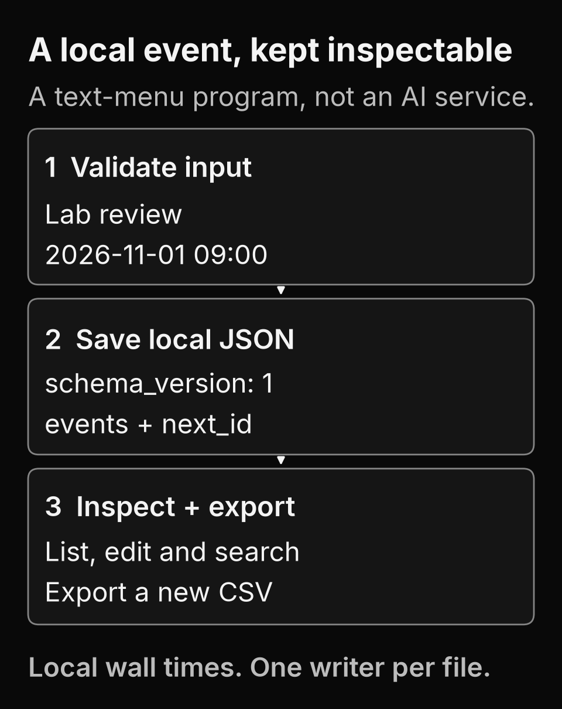

A calendar you can inspect.
Calendar Tracker is a small Python text-menu application for a CSCI498 version-control lab. Add, list, edit, delete and search local events, then inspect their JSON storage or export a new CSV file.
This page explains the local program. It does not run the calendar in your browser, connect to an online calendar or provide an AI service. The repository records five versions and discloses AI assistance.
Validate, save, then inspect

A title must contain text, and the date must be real and zero-padded. A valid change is written to a temporary file before replacing the JSON calendar. Only then does the in-memory state change. A failed write leaves the previous in-memory state available.
One synthetic event, two inspectable files
Start with an empty calendar and add Lab review at 2026-11-01 09:00. This authored example follows schema 1 and the program's first identifier. The date is a local wall time, with no timezone conversion.
Calendar JSON
{
"schema_version": 1,
"next_id": 2,
"events": [
{"id": 1, "title": "Lab review", "starts_at": "2026-11-01 09:00"}
]
}CSV export
id,title,starts_at
1,Lab review,2026-11-01 09:00The actual exporter writes a UTF-8 byte-order mark for spreadsheet compatibility and refuses an existing destination. Formula-leading titles receive a leading apostrophe in the CSV while stored titles stay unchanged. The JSON and CSV above are explanatory text, not downloadable personal data.
Read validation, persistence and export or inspect the temporary-file tests.
Run the local program
Use Python 3.11 or later. The application needs no third-party packages. Clone or download the public source and run these commands in that checkout.
python calendar_tracker.py --data my_calendar.json
python -m unittest -vThe menu writes local files. Choose a new CSV destination and keep one running instance per JSON file. Tests use temporary files and synthetic events. The workflow results and annotated version history retain their own revisions and results.
A small coursework boundary
This is a local, single-process calendar. There are no accounts, synchronization, reminders, online calendar integration or timezone handling. Corrupt storage stops startup rather than being replaced with an empty file. Atomic file replacement is not a production backup or multi-process coordination system.
The five versions cover in-memory events, JSON persistence, editing, search and CSV export. The diagram explains those choices. It does not claim deployment of the local application, production use or model capability.
Graphic source, rendering and typography limits · Static-page build identity · Return to the portfolio